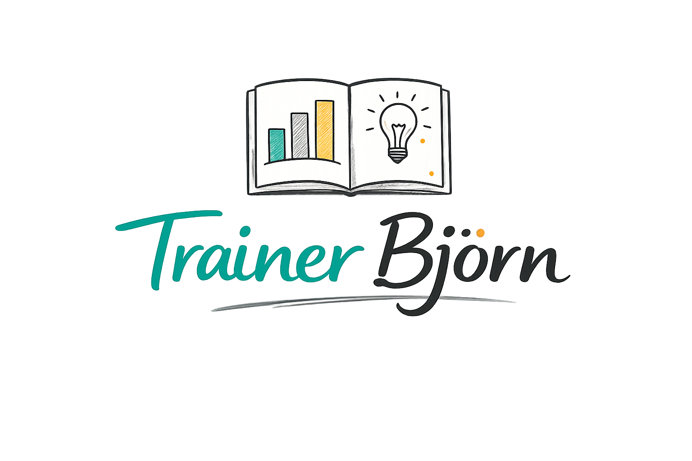

Welkom bij 
Sommige pagina’s nodigen uit om snel verder te gaan.
Snel door te scrollen.
Mijn hoop is dat deze je uitnodigt om nog even te blijven.
Even rond te kijken. Met mij mee te denken.
Een werkplek.
Een notitieboek dat openligt terwijl er wordt nagedacht, uitgelegd en geprobeerd.
Ik werk hier met vragen die vaak terugkomen in trainingen.
Vragen over systemen, keuzes, en waarom iets soms ineens wél of niet werkt.
Soms begint dat met een schets.
Soms met een voorbeeld.
Altijd met de intentie om het samen helder te krijgen.
In veel vakgebieden ontstaat verwarring niet door gebrek aan kennis,
maar door het aantal mogelijkheden dat tegelijk openligt.
Zeker in Business Intelligence en Data voelt al snel álles relevant.
Er zijn veel tools, veel routes, veel manieren om iets te maken.
En dan zijn er ook nog alle zogenaamde stakeholders. Ga er maar aan staan.
Wat dan ontbreekt, is niet informatie, die is er zat
vaak is het een gebrek aan houvast bij het kiezen.
Wat is in deze situatie logisch?
Wat draagt bij — en wat leidt vooral af?
Begrip ontstaat hier zelden door méér theorie.
Het ontstaat wanneer denken en doen naast elkaar mogen bestaan,
en je kunt onderzoeken en bepalen hoe ze elkaar raken.
Dat moment — waar inzicht richting geeft aan wat je bouwt —
is waar het leren hier begint.
In de praktijk komen vragen zelden netjes geordend binnen.
Ze duiken op terwijl je al aan het bouwen bent.
- — Hoe vertaal ik een wens naar een dashboard dat inhoudelijk klopt én impact maakt?
- — Welke DAX-logica past hier, en wanneer maak ik het onnodig complex?
- — Welke visual ondersteunt het verhaal, in plaats van het te overschreeuwen?
- — Hoe voer ik het gesprek met een data engineer over modellen, bronnen en keuzes?
- — Waar begin ik, zodat een BI-project niet weer blijft hangen in iteraties?
Dit zijn geen losse problemen.
Het zijn verschillende momenten in hetzelfde denkproces.
Pas wanneer die samenhang zichtbaar wordt,
ontstaat er rust — en ruimte om verder te bouwen.
Om iets écht moois en waardevols te maken.
Als deze vragen herkenbaar zijn,
is het logisch om verder te kijken hoe ik hiermee werk.
Op deze site beschrijf ik hoe ik trainingen en workshops opzet:
hoe structuur ontstaat,
hoe praktijk en theorie elkaar versterken,
en hoe mensen grip krijgen op hun eigen werk.
Je kunt beginnen bij mijn werkwijze,
of verkennen welke onderwerpen en thema’s ik in de vorm van
trainingen aanbied.